Pumped Storage Hydro
1 Background
1.1 The clean energy transition
The energy landscape is rapidly changing at the world shoots for net zero emissions and 1.5 C warming by 2030-2050. Energy demand has doubled over past 25 years; and will double again in next 25 years, as the electrification of cars, homes, and industry is continues.
In the past 25 years, there have been major increases in wind and solar capacity installation and generation, but also note decline of coal and increase in natural gas (Figure 1).
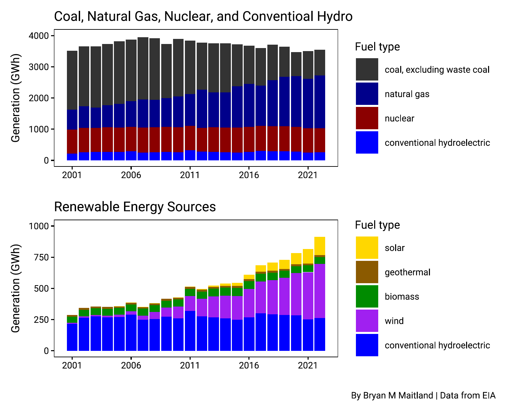
Global events are accelerating this transition. Supply side economics from the COVID pandemic and the Russian invasion of Ukraine have shifted policies and propelled government and private investments in clean, carbon-free energy. But integrating this rapidly growing fleet of renewables into the grid is very challenging beucase these energy sources are variable.
1.2 Integrating solar and wind: the Duck Curve
Solar and wind generation require quick generation ramp up/down resulting in a graph of power production over the course of a day that shows the timing imbalance between peak demand and solar power generation (Figure 2). The term was coined in 2012 by the California Independent System Operator.
The duck curve is a example of a dunkelflaute, a “dark doldrums” or “dark wind lull” — a period of time in which little or no energy can be generated with wind or solar power. Also known as the anticyclonic gloom in meteorology.
In locations where a substantial amount of solar electric capacity has been installed, the amount of power that must be generated from sources other than solar or wind displays a rapid increase around sunset and peaks in the mid-evening hours, producing a graph that resembles the silhouette of a duck.
A major challenge is deploying mitigating capacity at a rate that keeps up with the growth of solar energy production. The effects of the duck curve have happened faster than anticipated.
Here is California’s famous duck curve, updated for 2023 (Figure 3). CAISO now routinely flirts with near-zero net loads on the sunniest spring days. Basically, imagine that the sun shines every day and causes ~$20 Billion worth of plants that look roughly like this to turn off to get out of the solar gen’s way for ~12 hours.
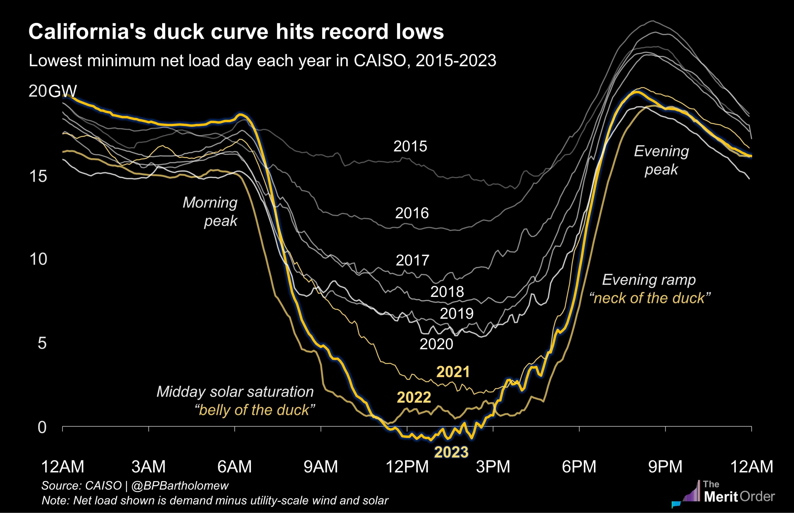
Or, in other words:
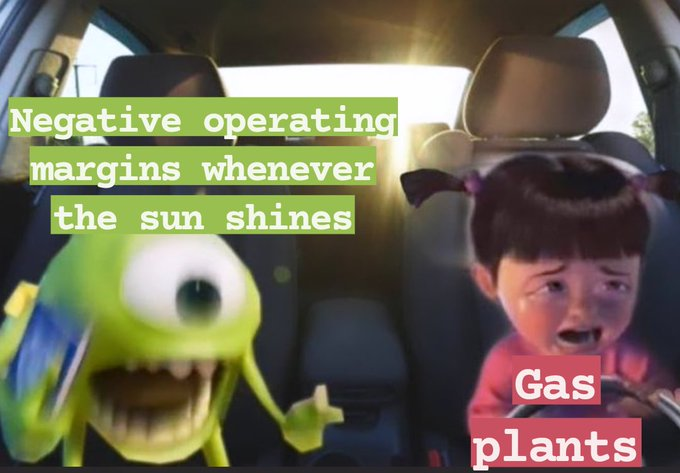
And:
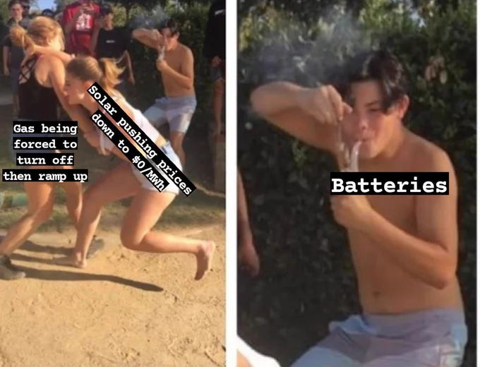
Mitigation Strategies:
- installing more dispatchable generation (grids with high penetration of renewable energy sources generally need dispatchable generation rather than baseload generation)
- orient PVs west to maximize generation at sunset
- energy storage systems (pumped hydro, geothermal, batteries)
Hydro considerations:
- environmental flows often restrict hydropower response speed
- environmental flows most common during times with most grid stress
- no requirement to consider grid reliability
- potential pinch points for grid reliability and biota with wind/solar integration
- different tools may be needed to understand sub-hourly impacts and assess habitat and generation tradeoff
2 Pumped Storage Hydropower
Pumped-storage hydroelectric (PSH) systems are the oldest and some of the largest (in power and energy capacity) utility-scale energy storage systems (ESS) in the United States and the world.
General Characteristics:
- Long duration ESS (water battery or energy sponge)
- Life of >50 years without degradation
- Flexible resource that can change output to meet grid conditions
- Large synchronous inertial
- Regional energy security
2.1 How it works
Water is pumped from a lower reservoir to an upper reservoir in times of high electricity supply and/or low demand (Figure 4).
During times of low supply and/or high demand, water from the upper reservoir is released into the lower reservoir, generating electricity as it moves through a turbine.
Once in the low reservoir, water is ready to be pumped back up again when more energy is available. It’s a continuous cycle, always ready to store and release electricity whenever it’s needed.
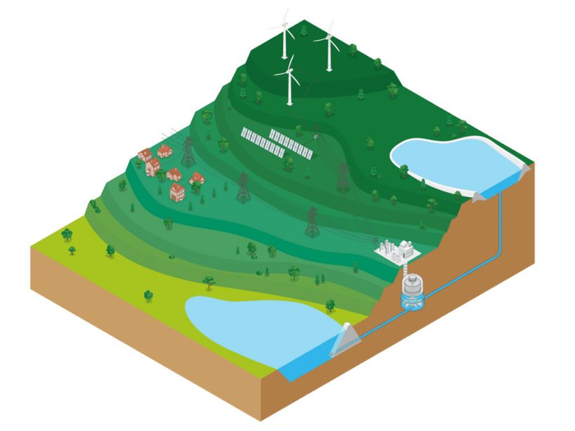
Broadly speaking, the energy storage capacity depends on the size of its two reservoirs, while the amount of power generated is linked to the size of the turbines.
They don’t necessarily have to be gargantuan to be useful either. For example, the IHA estimates that a facility with two reservoirs roughly the size of two Olympic swimming pools, and a 500 meter height difference between them, could provide a capacity of 3 MW and store up to 3.5 MWh of electricity.
Pumped hydro is also a mature technology that’s already providing an estimated 9,000 GWh of energy globally, representing 94% percent of all utility scale energy storage.
2.2 Key benefits
- clean, flexible, hydroelectric energy storage technology
- stability = time-shifting power generated at low demand for electricity at high-demand
- supports growing proportion of variable renewable energy (which can destabilize grids)
- PSH integrates the indeterminacy and seasonality of variable renewable (variable output)
- reduce curtailment during oversupply (store the energy)
- provide inertia to stabilize grids through frequency control and voltage regulation
- dispatchable: storage and reserve power with rapid mode changes (fast ramping for peak demand)
- black-start capability
- long asset life, low-lifetime cost and independence from raw materials
Research has shown that national electricity grids powered by one hundred percent renewable energy could potentially be facilitated by energy storage facilities with as little as 5-hour discharge duration, even through northern hemisphere winters. So, pumped hydro, with typical discharge duration of 8-10 hours can be ideal.
Load shifting
Pumped hydro storage plants serve an important role on electric power systems: they improve system-wide efficiency and reliability by allowing system operators to time-shift power generated during periods of low demand for electricity for use during high-demand periods (Figure 5). Although more electricity is used to force the water uphill at night than is produced when it flows downhill during the day, shifting the availability of power from overnight generation to serve daytime load adds significant value. (NOTE: also achieved using other ESSs).
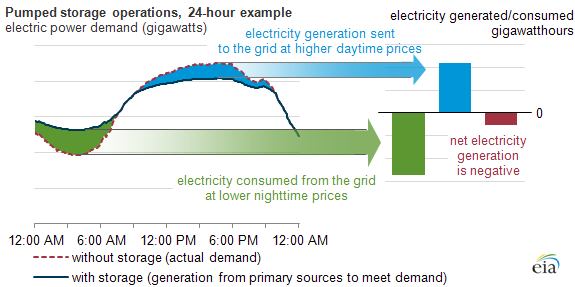
For example, In 2011, pumped storage plants produced 23 billion kilowatthours (kWh) of gross generation—roughly as much as petroleum-fired generation in that year.
Pumped storage plants, however, consumed 29 billion kilowatthours (kWh) of electricity in 2011 to refill their storage reservoirs, resulting in a net generation loss of 6 billion kWh.
But, this flattens the duck curve (Figure 6).
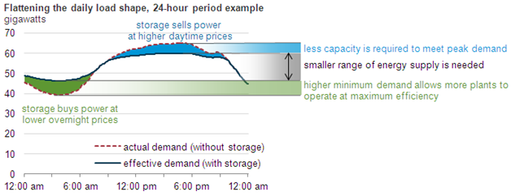
2.3 Status and Trends
Global
PSH was first used in Italy and Switzerland in the 1890s, in the US by 1930 (with most built in the 1970’s), and is now used worldwide.
Global stats from IRENA (2023):
- Renewable power capacity = 3.3 TW = 40% of all power
- 295 GW added in 2022 (9.6% increase; 83% of power additions)
- hydro = 1392 GW = 1.40 TW (vs. 1310 GW in 2019)
- installed pumped hydro capacity in 2021 = 167 GW
- installed solar capacity= 192 GW
- installed wind capacity = 75 GW
- to meet NZE and 1.5 C warming, 1000 GW per year until 2030
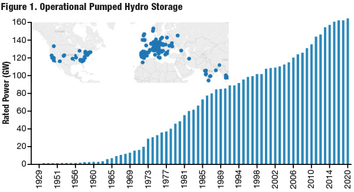
United States
- 40 PSH systems in operation across 18 states (NHA says 40 sites at 23 GWs)
- 22.1 GW (vs. 8 GW for battery ESSs); 2% of U.S. generating capacity
- Five states—CA, GA, MI, SC, VA—combined, had 61% of the total U.S. PSH nameplate power generation capacity in 2022, and they accounted for about 67% of total gross electricity generation from PSH facilities in 2022.
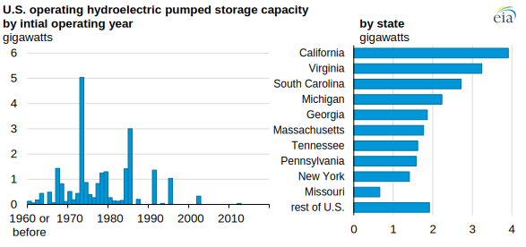
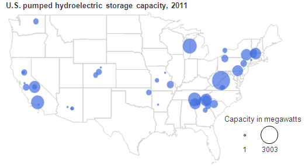
Canada
- Currently at ~ 85 GW installed hydropower (both trad and psh)
- Has tremendous potential for PSH - 8,000 GW identified at almost 1,200 sites (Stantec 2023)
Australia
- Snowy 2.0 PSH is largest new renewable energy project in AUS
- 200 MW or 10% capacity, bringing total capacity to 2,200 MW;
- 350,000 MWh of energy storage for 150 years. Cost ~ 12 billion
2.4 Future Potential
New PSH faces many challenges (see Section 2.5), so little development over the past 30 years. But it is undergoing a renaissance in countries where wind and solar power are also growing, helping allay concerns about weather-related dips in renewable energy output.
Paths forward to PSH include:
- retrofitting old conventional hydro into a PSH system
- installing new closed-loop PSH systems
According to the NHA, as of January 2012, FERC had granted preliminary permits for 34 GW of pumped storage capacity over a total of 22 states.
As of December 2022, EIA had not received formal notices for planned new PSH or flywheel energy storage projects. However, as of February 2023, the FERC, which permits and licenses non-federal PSH projects in the United States, reports pending licenses for 2,672 MW of new PSH capacity in California, Massachusetts, and Wyoming. In addition, FERC has issued preliminary permits for 47,960 MW of PSH capacity in 21 states.
Currently over 100 projects in pipeline, and pumped hydropower storage capacity is expected to increase by almost 50 per cent – to about 240 GW by 2030 (IHA 2018).
Figure 9 shows that whilst there is a sizable pipeline under development / permitting, most PSH under construction is in East Asia, principally China (80% of planned projects worldwide).
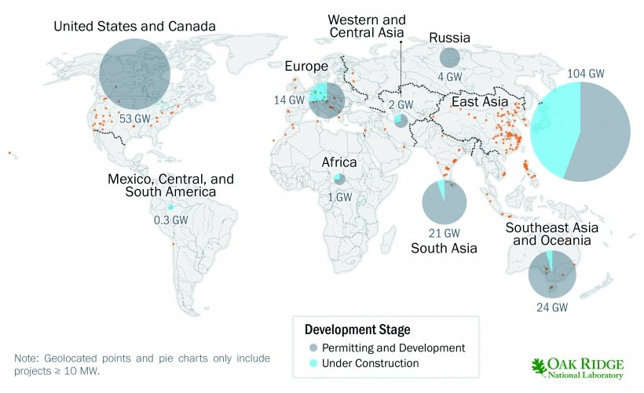
There is significant potential for scaling up global pumped hydro capacity:
- NREL has identified 14,846 off-river sites in the US (Rosenlieb, Heimiller, and Cohen 2022)
- equals 3.5 TW of capacity when assuming a 10-hour storage duration
- used methods of (Stocks et al. 2021)
- ANU has identified over 600,000 off-river sites across globe (Stocks et al. 2021)
- equals 23,000 TWh of storage potential
- 100x what is needed for 100% renewable energy future
A May 2023 NYT article highlighted the the shift away from conventional hydro and rapid rise of pumped hydro across the world. It summarized data from the GEM’s Global Hydropower Tracker. Some takeaways:
- China is ambitiously planning new pumped hydro (now surpassing Europe’s capacity)
- In US and AUS, legislation has spurred new renewable energy projects
- Conventional hydro not dead: China and sub-Saharan Africa plan for cheap electricity
- China accounts for about half of global growth in renewables: now leads world in wind/solar/hydro capacity (but still loves coal)
- Run-of-river facilities on the rise in mountainous places (Nepal)
- Conventional dams have big problems
- environmental (habitat loss, environmental flows)
- methane releases (3-7% of human emissions)
- safety (earthquakes)
- water evaporation
The IHA’s also has a Pumped Storage Tracking Tool that maps the locations and vital statistics for existing and planned pumped storage projects. It claims it is the most comprehensive online resource on the world’s ‘water batteries’.
2.5 Impediments to progress
- licensing regulations and requirements (costs and lead time)
- US clean energy projects take longer to get off the ground, from power lines, to wind and solar plants
- in US, new 2-yr expedited process for off-river pumped hydro, but not successfully used yet
- engineering development costs
- costs vs other ESS costs
- environmental, geotechinical, political constraints
- long-distance interconnection issues
- Industry trends are focusing on distributed generation and storage, which is more directed toward batteries
- PSH’s key attributes, such as grid reliability and the integration of additional renewable resources, are not adequately compensated within the current environmental and power markets and regulatory constructs
The 2020 IFPSH identified three key impediments to more pumped hydro:
- Furthering PSH potential: install at old mines, underground caverns, non-powered dams and conventional hydropower plants, as well as location agnostic underground PSH, off-river PSH and seawater PSH, represents vast untapped potential
- Retrofitting and upgrading PSH systems: latest technological advancements, such as the use of variable speed pump-turbines and hydraulic short circuit, can enhance the services provided by existing PSH
- Developing hybrid systems: coupling PSH with batteries, floating solar PV, heat storage and desalination can provide additional services with reduced costs and environmental impacts
3 Conventional Hydropower
Hydropower extracts mechanical energy from water, transforming it into electrical energy to generate electricity.
Humans have been harnessing energy from water for millennia, although not explicitly for electricity generation. The ancient Greeks used water wheels to grind wheat over 2000 years ago. Hydropower continued to be exclusively converted directly into mechanical power up until the end of the 19th century when electrical dynamos were attached to the shaft to generate electricity. Dynamos were the first type of electrical generator.
Dam operations commonly cause large, frequent fluctuations in river stage, which persist for long distances downstream. Minimizing and mitigating environmental impacts of hydropower is a key challenge
- highly influence by operational mode: load-following vs. peaking vs. run-of-river.
Mitigation can come in different forms:
- build structures (fish passage, fish safe turbine, boat ramps, trails)
- flow mitigation (minimum flows, ramp rate restrictions)
- operational flows can be designed to minimize impacts
3.1 Hydropeaking
The practice of releasing pulses of water to increase hydroelectric power production at hydro dams to meet peak daily electricity demand.
Causes huge changes in flows downstream of dams.
Causes water to move in and out of the streambed / hyporheic zone and fundamentally alters adjacent hydrology and dynamics (Hucks Sawyer et al. 2009), with impacts on aquatic insects and whole food webs (Kennedy et al. 2016).
4 References
Hucks Sawyer, Audrey, M. Bayani Cardenas, Ashleigh Bomar, and Meredith Mackey. 2009. “Impact of Dam Operations on Hyporheic Exchange in the Riparian Zone of a Regulated River.” Hydrological Processes 23 (15): 2129–37. https://doi.org/10.1002/hyp.7324.
IHA. 2018. “The World’s Water Battery: Pumped Hydropower Storage and the Clean Energy Transition.” Sutton, London, UK.
IRENA. 2023. “Renewable Capacity Statistics 2023.” Abu Dhabi.
Kennedy, Theodore A., Jeffrey D. Muehlbauer, Charles B. Yackulic, David A. Lytle, Scott W. Miller, Kimberly L. Dibble, Eric W. Kortenhoeven, Anya N. Metcalfe, and Colden V. Baxter. 2016. “Flow Management for Hydropower Extirpates Aquatic Insects, Undermining River Food Webs.” BioScience 66 (7): 561575. https://doi.org/10.1093/biosci/biw059.
Rosenlieb, Evan, Donna Heimiller, and Stuart Cohen. 2022. “Closed-Loop Pumped Storage Hydropower Resource Assessment for the United States.”
Stantec. 2023. “Technical and Economic Potential Assessment of Pumped Storage Hydropower in Canada.”
Stocks, Matthew, Ryan Stocks, Bin Lu, Cheng Cheng, and Andrew Blakers. 2021. “Global Atlas of Closed-Loop Pumped Hydro Energy Storage.” Joule 5 (1): 270–84. https://doi.org/10.1016/j.joule.2020.11.015.